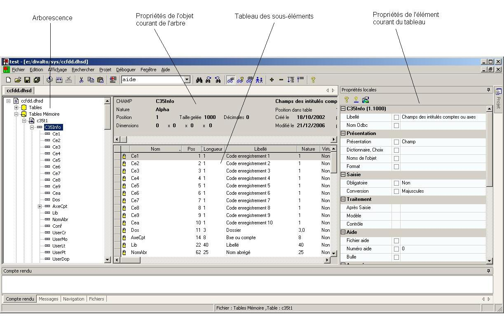

L’écran de l’éditeur de dictionnaire se divise en quatre grandes parties :
Sur la gauche, un arbre représente l’intégralité du dictionnaire.
L’arbre est hiérarchisé en Fichiers – Tables – Champs – Sous-champs.
La partie supérieure droite rappelle les caractéristiques de l’objet courant ( celui qui est sélectionné dans l’arbre).
La partie inférieure droite est un tableau représentant la liste des sous-objets de l’élément courant de l’arbre.
La partie de droite contient les propriétés de l'objet sélectionné du tableau.
La taille de ces différentes parties peut être réglée à l’aide la souris. Positionnez le curseur sur la frontière entre deux zones, le curseur change de forme et vous pouvez alors déplacer la frontière.
La présentation du tableau peut également être adaptée :
Pour modifier la largeur d’une colonne, cliquez sur la frontière avec la colonne suivante puis déplacez celle-ci.
Pour déplacer une colonne, cliquez sur l’entête de la colonne puis déplacez-la.